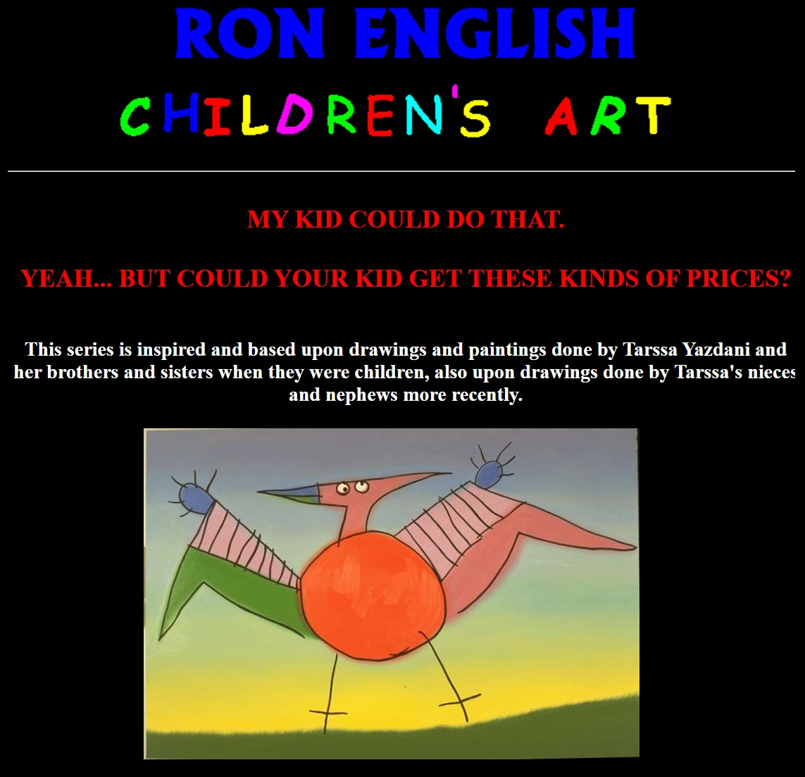

Exhibitions
Hey! My Kid Could Do That, Gallery Stendhal, New York, New York, US, November 12–December 12, 1992.


Provenance
Collection of the artist.
Ancillary Documentation

Hey! My Kid Could Do That, Gallery Stendhal, New York, New York, US, November 12–December 12, 1992.
Collection of the artist.
